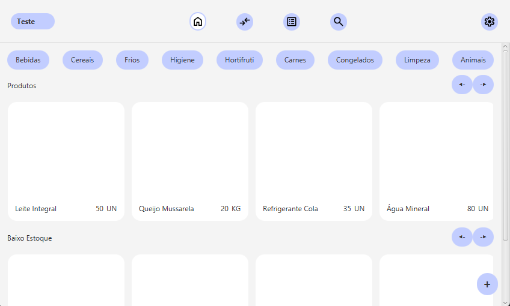
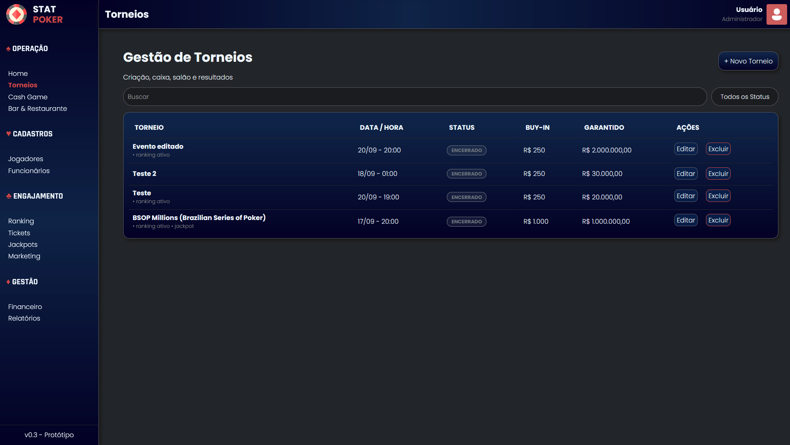
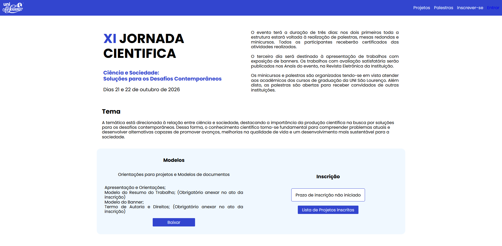

José Silvério
Projetos
Sistemas funcionais e ferramentas de gestão: aplicações de finanças, estoque, eventos e impacto social, desenvolvidas em projetos autorais e acadêmicos.
-

Gerenciador de Poupança
Aplicação desktop desenvolvida em JAVA com JavaFX para gerenciamento de cofres de poupança.
- Java
- JavaFX
- SQLITE

Descarte de Eletrônicos Consciente
Aplicação web com mapa interativo para localização de pontos de descarte de eletrônicos em São Lourenço, MG.
- HTML
- PHP
- JavaScript
- CSS
- MySQL
- leaflet

Estoque
Controle de estoque doméstico em JavaFX com SQLite: acompanhe o que tem em casa e gere sua lista de compras.
- JAVA
- JavaFX
- SQLite
- CSS

StatPoker
O conceito do site consiste em uma interface moderna e simplificada, implementando operações CRUD (criação, leitura, atualização e exclusão) para torneios de pôquer e seus respectivos itens de caixa.
- PHP
- HTML
- CSS
- JavaScript
- MySQL
- MVC
- PDO
- CRUD

Jornada XI
Projeto acadêmico de redesign do site oficial da Jornada Científica do Centro Universitário São Lourenço, desenvolvido para disciplina de Práticas Integradas.
- HTML
- CSS